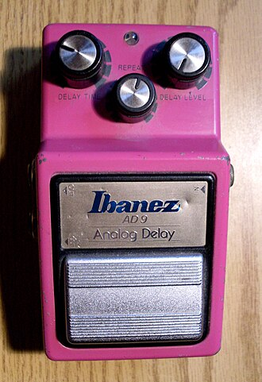

Delay is an effect that replicates an "echo" effect by repeating copies of the input signal after some delay in time. There is also feedback of the output signal with some attenuation, resulting in a series of decaying repeats after a note is played. Most pedals are able to adjust the delay time, amount of feedback, amount of decay, and a mix between the original and affected signal.
Many delay pedals use something called a "bucket-bridgade device", which is a integrated circuit that takes a sample of the signal voltage, then moves that voltage along a series of capacitors when triggered. When the sample reaches the end of the series, it is mixed into the output signal. The amount time delay in the signal is based on the number of steps in the series and the trigger rate.
